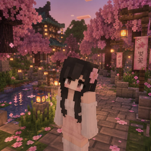

Survival do jeito que deveria ser.
Construa, explore e sobreviva em um mundo calmo e bonito, ao lado de uma comunidade que joga junto. Sem pressa, sem bagunça.
Sem pay-to-win. Entre em menos de um minuto.
Um vale calmo para construir sua história.
Tudo o que um bom servidor survival precisa, sem enfeite demais.
Survival de verdade
Recursos, risco e progresso. Cada conquista é sua.
Seu terreno, seguro
Proteja suas construções e jogue sem medo de grief.
Clima de cerejeira
Um mundo tranquilo, com cara própria e cheio de detalhes.
Comunidade amiga
Jogadores e equipe que ajudam quem está começando.

Sobre a gente.
A Duskvale é um servidor de Minecraft focado em survival. A ideia é simples: um lugar tranquilo para jogar de verdade, com regras claras e uma equipe que cuida da experiência.
Aqui você começa do zero, escolhe onde morar, constrói do seu jeito e joga no seu ritmo, seja sozinho ou com amigos.
Tirar dúvidasEntre agora na Duskvale.
Abra o Minecraft Java, vá em Multijogador e adicione o servidor.